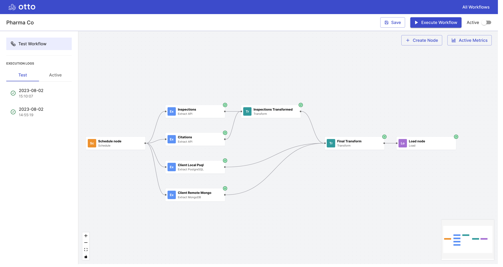

QuestBin
A RequestBin-like tool for inspecting webhooks (Express, React, Nginx, DigitalOcean Droplet, PM2)
Software Engineer
I'm a software engineer who had his start analyzing complex systems in photosynthetic biochemistry. When I'm not developing web applications, you might find me gaming or strumming my guitar. I'm currently based in Cleveland, OH.
I most recently created Otto, an open-source, web-based, and automated ETL (extract, transform, load) pipeline manager.
Otto is an open-source and web-based ETL (extract, transform, load) pipeline tool that automates the gathering, transforming, and loading of business data at scheduled intervals.
Otto prioritizes ease of use for JavaScript developers and provides observability features that enable users to monitor the execution and health of their ETL workflows.
A RequestBin-like tool for inspecting webhooks (Express, React, Nginx, DigitalOcean Droplet, PM2)
A property and resident management application (Ruby, Sinatra)